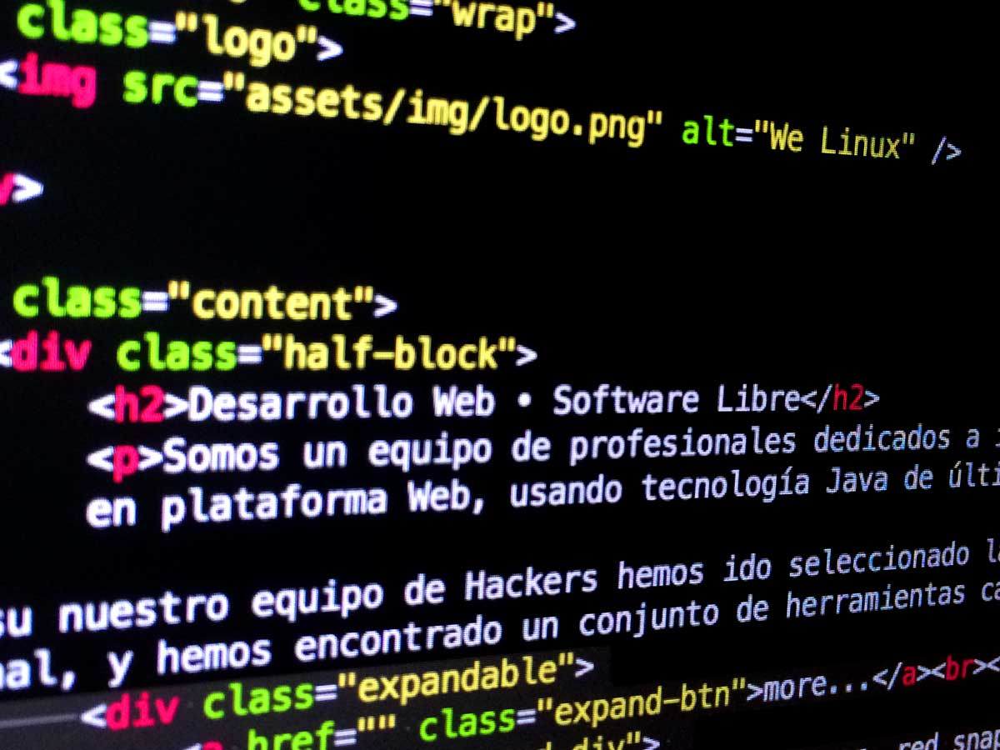

Desarrollo Web • Software Libre
Somos un equipo de profesionales dedicados a investigar y desarrollar soluciones tecnológicas basadas en software libre. Nuestro fuerte es el desarrollo de grandes Sistemas Empresariales en plataforma Web, usando tecnología Java de última generación. Hace unos años hemos también incorporado el MVC Play framework a nuestro catálogo de servicios.
Junto a nuestro equipo de Hackers hemos ido seleccionado la crema y nata del software libre en ámbitos tan variados como Networking, Sistemas de Correo electrónico, Data Warehouse y Desarrollo Web Profesional, y hemos encontrado un conjunto de herramientas capaces de desafiar mano a mano a las equivalentes en el Software Privativo.

 Hans Poo
Hans Poo